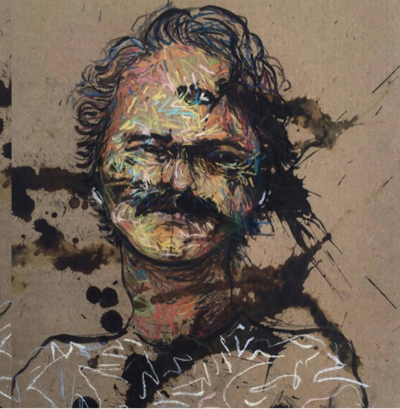

I’m a Peruvian creative director & digital artist working between design, computer graphics, commercial intelligence and data‑driven storytelling.
I work at the intersection of design, technology and applied research, creating images, films and visual systems that sit between speculative fiction, commercial work and real‑world data.
Over the last decade I’ve developed projects for brands, studios and cultural institutions, specialising in art direction, immersive systems and experimental development through prototyping and design led research. I like building visual systems: images, films and interfaces; that sit somewhere between speculative fiction, commercial work and real‑world data.
I often work on projects where strategic thinking, visual production and technological exploration have to coexist: a campaign that lives across screens, a data map that reveals a hidden pattern in trade, or music visuals that behave like a living system. My practice bridges creativity, analytical thinking and technical execution within interdisciplinary teams.
In parallel to commissions, I develop personal work in 3D and photography, building small worlds around mundane moments, landscapes, glitches in memory and the way bodies move through cities. I like when images feel both precise and slightly haunted.
Alongside my creative practice, I work with Bioenergía del Perú, developing investment projects in biofuels, renewable energy, agriculture and the sustainable recovery of agricultural and industrial waste.
